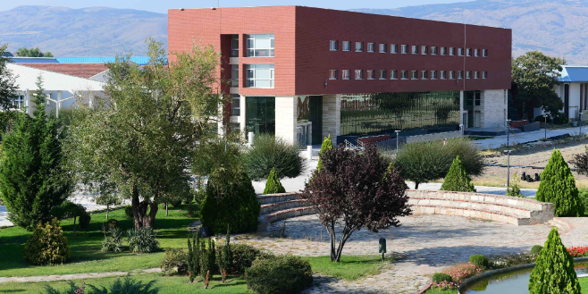
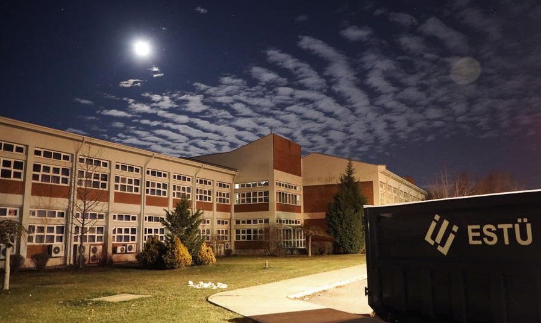
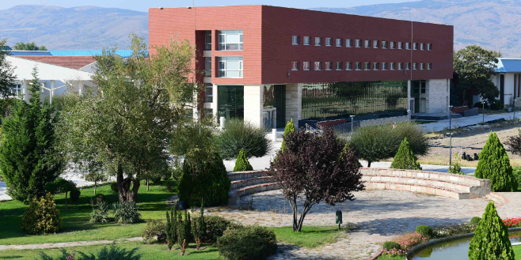
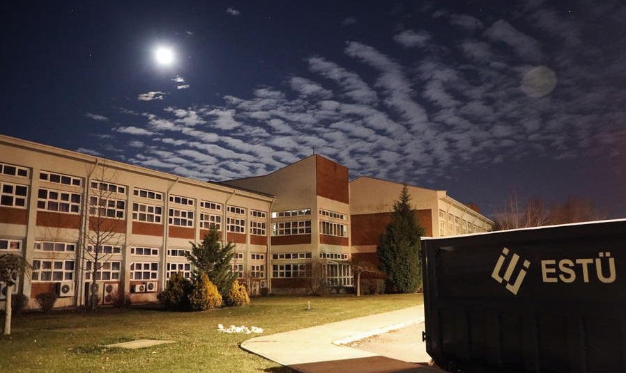

About Us
-
- Established with the Law No. 7141 published in the Official Gazette dated May 18, 2018 and numbered 30425, Eskişehir Technical University is in the center of Eskişehir, which is a city of science, culture and also a youth city. It consists of 5 Faculties, 2 Vocational Schools, 3 Institutes and 4 Research and Application Centers in 2 campuses. Eskişehir Technical University works to prepare its students for the future as the most equipped and competitive individuals in creative and dynamic educational environments, with its competent teaching staff, each of whom follows the developments in their field and shares all their time with their students, in its units with a strong infrastructure, where it carries out education and research activities. The operation of the international Hasan Polatkan Airport, located in the 2 Eylül Campus of our university, is carried out by our Faculty of Aviation and Space Sciences. There are international flights to Hasan Polatkan Airport operated by different airline companies on various days of the week.
Procedures and Principles
-
- Eskisehir Technical University Practice Principles Regarding Make-Up Exams for Associate Degree-Undergraduate-Graduate Programs
- Eskişehir Technical University Intellectual and Industrial Property Rights, Technology Transfer and Commercialization of Information Policies and Principles
- Procedures and Principles Regarding Just and Valid Causes at Eskişehir Technical University
Administration
-
UNIVERSITY SENIOR MANAGEMENT
- Rector Prof. Dr. Tuncay DÖĞEROĞLU tdogeroglu@eskisehir.edu.tr
- Vice-Chancellor Prof. Dr. Alper ÇABUK acabuk@eskisehir.edu.tr
- Vice-Chancellor Prof. Dr. Gürsoy ARSLAN garslan@eskisehir.edu.tr
- Vice Secretary General Hasan AKIN hasanakin@eskisehir.edu.tr
- * Last updated: 03.02.2022
ESKISEHIR TECHNICAL UNIVERSITY SENATE MEMBERS
Natural Members
- Rector Prof. Dr. Tuncay DÖĞEROĞLU tdogeroglu@eskisehir.edu.tr
- Vice-Chancellor Prof. Dr. Alper ÇABUK acabuk@eskisehir.edu.tr
- Vice-Chancellor Prof. Dr. Gürsoy ARSLAN garslan@eskisehir.edu.tr
- Dean of the Faculty of Science Prof. Dr. Yeliz MERT KANTAR ymert@eskisehir.edu.tr
- Dean of the Faculty of Aviation and Space Sciences Prof. Dr. Öznur USANMAZ ousanmaz@eskisehir.edu.tr
- Dean of the Faculty of Architecture and Design V. Prof. Dr. Osman TUTAL otutal@eskisehir.edu.tr
- Dean of the Faculty of Engineering Prof. Dr. Onur KAYA Onur_kaya@eskisehir.edu.tr
- Dean of Faculty of Sports Sciences Prof. Dr. Metin ARGAN margan@eskisehir.edu.tr
- Director of Graduate Education Institute Prof. Dr. Murat TANIŞLI mtanisli@eskisehir.edu.tr
- Director of the Institute of Earth and Space Sciences Assoc. Dr. Uğur AVDAN uavdan@eskisehir.edu.tr
- Director of the Institute of Transportation Sciences Prof. Dr. Ö.Mete KOÇKAR mkockar@eskisehir.edu.tr
- Director of Porsuk Vocational School Prof. Dr. Hüseyin KOCA hkoca@eskisehir.edu.tr
- Director of Vocational School of Transport Prof. Dr. Ö.Mete KOÇKAR mkockar@eskisehir.edu.tr
Selected Members
- Faculty of Science Prof. Dr. İbrahim KANİ ibrahimkani@eskisehir.edu.tr
- Faculty of Aviation and Space Sciences Prof. Dr. M.Şerif KAVSAOĞLU mskavsaoglu@eskisehir.edu.tr
- Faculty of Architecture and Design Prof. Dr. Nuray ÖZASLAN nozaslan@eskisehir.edu.tr
- Faculty of Engineering Prof. Dr. Ferhat KARA fkara@eskisehir.edu.tr
- Faculty of Sport Sciences Prof. Dr. Hayri ERTAN hertan@eskisehir.edu.tr
- Reporter Hasan AKIN hasanakin@eskisehir.edu.tr
- Student Representative Osman ŞİMŞEK osman_sismsek@eskisehir.edu.tr
- * Last updated: 03.02.2022
MEMBERS OF THE UNIVERSITY BOARD
Natural Members
- Rector Prof. Dr. Tuncay DÖĞEROĞLU tdogeroglu@eskisehir.edu.tr
- Dean of the Faculty of Science Prof. Dr. Yeliz MERT KANTAR ymert@eskisehir.edu.tr
- Dean of the Faculty of Aviation and Space Sciences Prof. Dr. Öznur USANMAZ ousanmaz@eskisehir.edu.tr
- Dean of the Faculty of Architecture and Design V. Prof. Dr. Osman TUTAL otutal@eskisehir.edu.tr
- Dean of the Faculty of Engineering Prof. Dr. Onur KAYA Onur_kaya@eskisehir.edu.tr
- Dean of Faculty of Sports Sciences V. Prof. Dr. Metin ARGAN margan@eskisehir.edu.tr
Selected Members
- Faculty of Science Prof. Dr. Berna Yazıcı bbaloglu@eskisehir.edu.tr
- Faculty of Engineering Prof. Dr. Ömer Nezih need ongerek@eskisehir.edu.tr
- Porsuk Vocational School Prof. Dr. Özlem ONAY oonay@eskisehir.edu.tr
- Reporter Hasan AKIN hasanakin@eskisehir.edu.tr